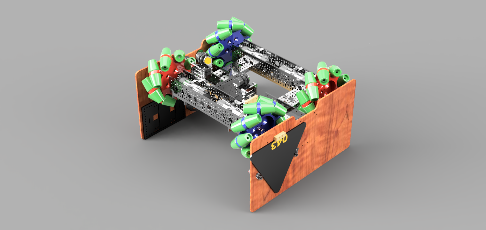
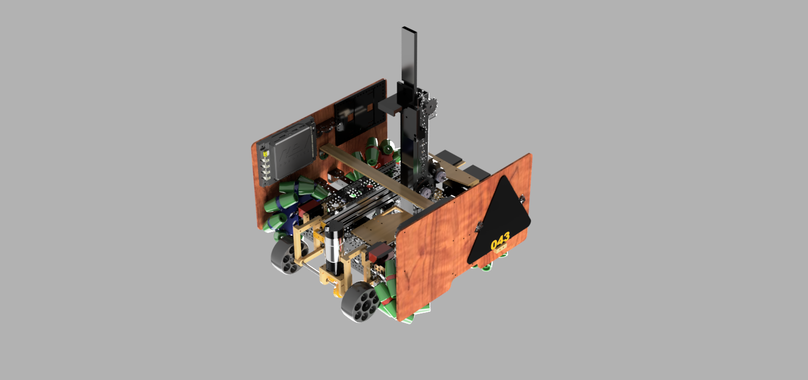
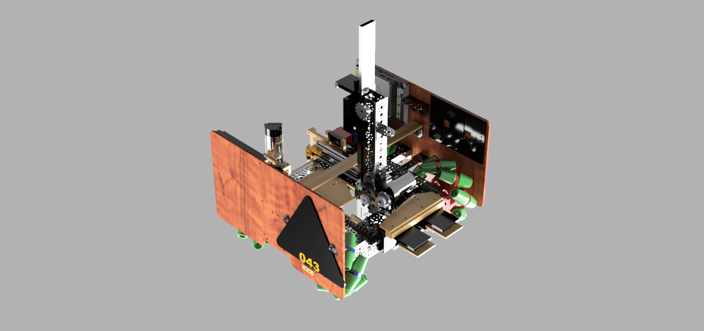
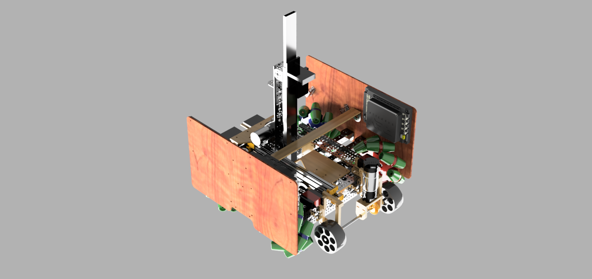

Демонстрация работы механумной базы
База для максимальной проходимости. Гибрид профилей GoBilda и Tetrix.
RoadRunner для точных траекторий и компенсации пробуксовки.


Работа цепной передачи и крюка


Центральная башня. Крюк цепляется за пандус и приподнимает робота.
Проблема: Сгорание мотора из-за ошибки порта.
Решение: Программное удержание (Hold Mode) для фиксации позиции без перегрева.
Работа захвата и сервоприводов
Двухступенчатый манипулятор для сбора образцов.
Игрок управляет джойстиком: левый стик — поворот/наклон, правый — захват.




Тестирование роликовой системы


Система для забора образцов с поверхности.
Проблема: Проскальзывание на гладкой поверхности.
Решение: Замена роликов на силиконовые с протектором.
Автономная навигация и точное управление.
Распознавание маркеров Apriltag для точной навигации.


